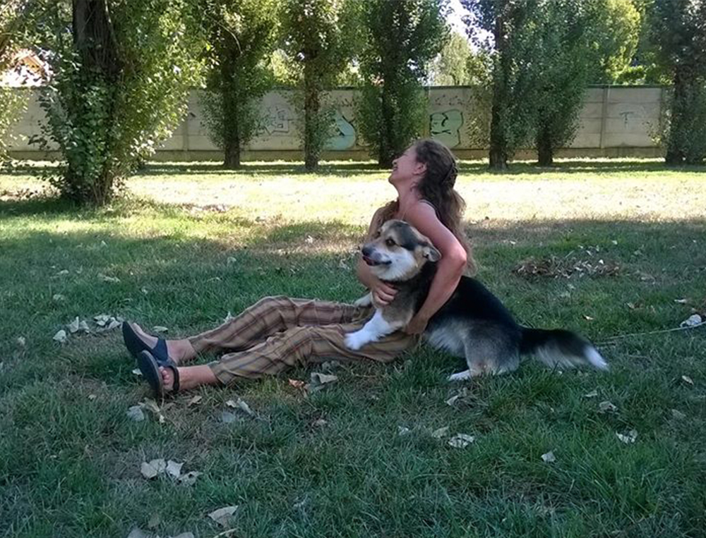

Come Lavoriamo
ospitiamo cani tutto l'anno, in base alle esigenze della loro famiglia. Tutti i nostri ospiti devono essere dotati di microchip, regolarmente iscritti in Anagrafe Canina, vaccinati e sverminati. Al fine di permettere ai cani in ingresso di stare con noi quanto più tempo possibile durante il giorno, è importante che arrivino entro le 11.30. Arrivare la sera consente al cane di stare poco con noi il primo giorno e quindi potrebbe causare stress, cosa che vogliamo assolutamente evitare! Le eccezioni devono appunto rimanere eccezioni, nel rispetto dei nostri amici.
L’inserimento del cane in pensione
Prima di accogliere un nuovo cane per un periodo più lungo di 2 giorni, chiediamo che gli sia permesso di ambientarsi gradualmente a noi e alla nostra casa. Chiediamo quindi di portare il nuovo amico di mattina, lasciarlo con noi per due notti per poi venirlo a prendere. Questo periodo è indispensabile al cane per abituarsi alla nuova situazione e a noi per comprendere se è davvero felice in nostra compagnia. Durante l’ambientamento la famiglia deve poter essere facilmente contattabile, perché nel caso in cui dovessimo notare che il nostro ospite è troppo a disagio, vogliamo permettergli di tornare a casa prima dello scadere del periodo. È molto importante che il cane rimanga con noi questi 3 giorni perché è questo il periodo di tempo necessario per fargli capire “come funzionano le cose”. Un inserimento più breve non ci da abbastanza informazioni, purtroppo. Per il suo benessere, dobbiamo attendere i suoi tempi e capire cosa lui ci vuole dire. La maggior parte dei cani necessita solo di questo ambientamento, ma per alcuni più timidi potremmo consigliare più periodi, di breve durata. Non si tiene mai in pensione per lungo tempo un cane che ha ancora bisogno di ambientarsi.
Arriva il nostro ospite!
All’arrivo da noi, il cane, appena dopo l’accettazione, viene accompagnato in uno dei nostri parchi da zia Francy o da una delle ragazze che lavorano insieme a noi. Se il cane è un nuovo ospite, chiederemo ai proprietari di fare la passeggiata in libertà nel parco insieme a noi e al suo amico. Vi chiederemo di parlarci del vostro cane, così da conoscerlo insieme a voi e capire come accudirlo al meglio. Dopo la passeggiata, a seconda del tipo di ospite, Simona sceglierà l’alloggio migliore per lui. Se si rivela socievole con i suoi simili, l’agenzia matrimoniale Puttini gli o le troverà il giusto compagno (o compagna!), facendo sempre in modo che stiano insieme cani di pari taglia, più o meno della stessa età ma soprattutto cani con caratteri compatibili. Ogni giorno potrà correre e giocare libero con le nostre ragazze nei parchi e i suoi familiari potranno seguire le sue avventure grazie alle foto e ai video sulla nostra pagina facebook.

